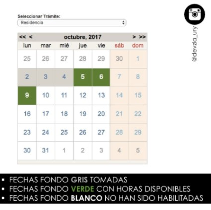

1) ¿Cómo vivo y trabajo legalmente en Uruguay?
Como venezolano tienes por lo menos dos opciones, la Residencia Permanente Mercosur y la Residencia Temporaria Mercosur.
Residencia Permanente Mercosur en Uruguay
ACTUALIZADO 21/02/2020
OJO! Uruguay exige esquema de vacunación o carnet de vacunas para tramitar residencia por lo que la mayoría de los trámites comenzados en Venezuela deben completarse en Uruguay. SIGUE LEYENDO!
La República Oriental del Uruguay ofrece varios tipos de residencia a extranjeros – los venezolanos, como nacionales de MercoSur, tenemos dos que podemos solicitar con relativa facilidad, la Residencia Permanente Mercosur a través del Ministerio de Relaciones Exteriores de Uruguay la Residencia Temporaria Mercosur a través del Departamento de Residencias de la Dirección Nacional de Migración en Uruguay.
Haz click aqui para mas informacion de la residencia temporaria
Residencia Permanente Mercosur: La solicitud de Residencia Permanente Mercosur en Uruguay NO TIENE COSTO. Cada persona debe tener una cita para ser atendida – incluso los bebés y es un trámite personal y presencial – no puede ir alguien por ti.
Las citas se solicitan en línea y son habilitadas en Venezuela de un mes para el otro y en Uruguay semanalmente por lo que recomiendo tramitar los documentos necesarios primero.
DOCUMENTOS para venezolanos mayores de 18 años (menores de edad y otros haz click aquí):
- Pasaporte o cédula de identidad venezolana vigente (uno o el otro)
- Certificado de Antecedentes Penales del país o países donde has vivido los últimos cinco años – se considera que vives en un lugar si has estado allí más de seis meses. Ser residente ilegal no significa que no puedas sacar los antecedentes penales. Los antecedentes se consideran vigentes con no más de seis meses de solicitados y deben estar dirigidos a Ministerio de Relaciones Exteriores de la República Oriental del Uruguay. Los Antecedentes Penales venezolanos se solicitan en el Ministerio de Interior y Justicia. El certificado venezolano no requiere apostilla por qué sale con un código de verificación (por los momentos).
- Si solicitas en Venezuela, Carta de Residencia emitida por CNE debidamente legalizada y apostillada con no mas de seis meses de solicitados.
- Esquema de Vacunación o Carnet de Vacunas – deben tener constancia de vacunas al día de los niños y a los adultos le piden la dT o antitetánica. Cada día más y más venezolanos están haciendo esto en Uruguay. Sí vas al consulado de Uruguay en Caracas y no te aceptan el esquema de vacunas que llevas, obligatoriamente deberás continuar el trámite en Uruguay.
- Necesitarás además la “copia fiel” de la Partida de Nacimiento venezolana apostillada para sacar la cédula que no es requisito para solicitar la residencia pero necesaria para sacar la cédula uruguaya. Si estas casado, divorciado o viudo necesitas el acta correspondiente apostillado.
Debes pedir una cita para apostillar – coordina bien la solicitud de cita para apostillar asegurando que tendrás todos los documentos que quieres apostillar a esa fecha – otros documentos que puedes querer incluir son títulos de estudio, notas certificadas, planes de estudio, y permiso de menor para menores que viajaran sin uno o ambos padres, etc. Recuerda que actualmente puedes apostillar en cualquier estado. Asegúrate de que tu documento salga con código de verificación y que esté a tu nombre. OJO CON LOS GESTORES – los únicos que puedo recomendar son @yosoytuasesor que he utilizado personalmente.
SOLICITUD DE CITA
SOLICITUD DE CITA (cada cita es estrictamente individual, por lo tanto, debe existir una cita para cada persona, adulto o niño/bebé y éste debe presentarse personalmente el día de su cita). Las citas son habilitadas de un mes al o tro en Venezuela y semanalmente en Uruguay.
En Uruguay, desde el 1 de septiembre la agenda es liberada semanalmente todos los días viernes a las 3:30 pm (hora Uruguay) para la próxima semana.
En Venezuela, las citas son habilitadas de un mes a otro el primer día hábil de cada mes. Por ejemplo, las citas de abril 2020 serán liberadas el miércoles 1 de marzo. Las citas son liberadas alrededor de las 10:00 am (9:00 am en Venezuela).
- Las citas se agendan en la página web del Ministerio de Relaciones Exteriores. Allí debes decidir en qué país deseas comenzar el trámite. Sólo puedes tramitar en tu país de residencia o en Uruguay. Es decir, si eres venezolano y vives en Venezuela, sólo puedes tramitar en Venezuela o en Uruguay. Si eres venezolano residente de Argentina ( con DNI argentino) entonces puedes hacerlo en Argentina, en Venezuela o en Uruguay. No todos los consulados están habilitados para hacer este trámite. Consulta directamente con el consulado uruguayo del país en el que te encuentras si tienes dudas.
- Las citas se agotan rápido por lo que hay que estar pendientes temprano. Si es una familia o grupo de amigos que necesita varias citas trabajen simultáneamente en varias computadoras o móviles. Las citas habilitadas aparecen en verde (disponibles), en gris si los horarios están agotados y en blanco sí no han sido habilitadas. La siguiente imagen es un ejemplo: 
El formulario pide varias cosas pero para que no pierdas tiempo llena solo lo que tiene asterisco * que es obligatorio. OJO! VENEZUELA aparece bajo República Bolivariana de Venezuela.
Para más información visita esta página y/o baja los instructivos que prepara el gobierno uruguayo para los inmigrantes – en la parte derecha de la página al seleccionar Residencia.
¿Qué ocurre en la cita? Muchas personas creen que esta cita es como la de Visa americana. NO! No es así para nada – esta es una cita de recepción de documentos. Es muy cordial y las personas que te reciben son extremadamente amables y solo están allí para ayudarte. La cita tarda unos 25 minutos y mientras escanean todos tus documentos, te toman foto y huellas, te van contando cuales serán los próximos pasos.
Sí solicitas en Venezuela, te dirán que ahora tienes dos opciones: 1. esperar la aprobación de la residencia (toma 5-7 meses) en Venezuela – serás notificado por email, o 2. continuar el proceso directamente en Uruguay para lo cual deberás presentarte en el Ministerio de Relaciones Exteriores quienes te informaran cuales son los siguientes pasos.
Sí solicitas en Uruguay, el Ministerio de Relaciones Exteriores enviará de manera electrónica tu constancia de residencia en trámite a Dirección Nacional de Identificación Civil (DNIC) que junto a la partida de nacimiento apostillada te permite sacar cita para la cédula provisoria que te permite estar legal y trabajar mientras esperas la aprobación de la residencia (entre 5-7 meses). La cédula te la entregan entre 5-10 hábiles. E sto ocurre solo la primera vez. Cuando toque renovarla te la entregarán el mismo día.
Una vez aprobada la residencia recibirás un email informándote de que tu Constancia de Residencia Aprobada ha sido enviada al DNIC y que debes renovar la cédula (aunque no esté vencida). Si aun no has registrado tu partida de nacimiento apostillada en el Registro Civil, este es el momento de hacerlo. Deberás llevar al DNIC tu cédula uruguaya y el testimonio de partida para recibir tu cédula de residente legal con el cual puedes viajar, entrar y salir del país.
Si necesitas entrar y salir del país mientras la residencia está en tramite debes dirigirte al Ministerio del Interior y solicitar un permiso de reingreso.
RENOVACIÓN DE RESIDENCIA La residencia permanente uruguaya debe ser renovada a los tres años. Si, ya sé, “pero es de residente permanente, ¿Por qué tengo que renovarla?” Uruguay debe confirmar que seguimos viviendo en el país como residentes para eso debemos renovar el certificado de residencia permanente. Esto se puede hacer hasta tres meses antes de que venza la cédula, es gratis y extremadamente fácil – debes registrarte aquí y solicitar día y hora ficticias. No tendrás que presentarte en ninguna parte. Llenas los datos – te pedirá el número de trámite que son los cinco dígitos que aparecen al reverso de la cédula en la parte superior bajo Observaciones después de M.RR.EE. En unos 10 días recibirás un email informándote de que tú Renovación ha sido procesada y enviada a la Dirección Nacional de I dentificación Civil (DNIC) y que ya puedes ir a renovar la cédula nuevamente.
SOLICITUD DE CIUDADANÍA Los inmigrantes con familia constituida en Uruguay pueden comenzar la solicitud de nacionalidad uruguaya al cumplir tres años como residentes legales permanentes. Los inmigrantes solteros o qué emigraron solos/as deben esperar cinco años. Información sobre eso aquí.
Pueden dejar en los comentarios sus preguntas, recomendaciones, y propuestas o escribir a venezolanosenuruguay@gmail.com
2) Dinero Estimado para llegar
Desde el 1º de enero de 2020 rige el nuevo valor para el Salario Mínimo Nacional (SMN) que se elevó a la suma de $ 16.300 pesos mensuales o su equivalente resultante de dividir dicho importe entre 25 para determinar el jornal diario o entre 200 para determinar el salario por hora.
Un presupuesto de un mes para una persona contendria lo siguiente (gastos estimados, no incluye transporte):
1. Alquiler: $ 14.000 pesos aprox MONO-AMBIENTE investiga en mercado libre Uruguay alquileres HAZ CLICK AQUI
2. Gastos comunes (depende del lugar donde arriendes puede variar en algunos casos incluye luz y agua otros casos no): desde $ 1.500 pesos en adelante.
3. Alimentacion (incluye carne, frutas, granos): $ 5.000 pesos.
4. Internet WI-FI: $ 1.600 pesos.
Uruguay es un pais caro en relacion a los demas paises y ademas pequeño en consecuencia con
una economia pequeña, se recomienda venir con presupuesto aproximado para una persona para
estar tres meses sin trabajo de
Usd 2000. (Existen diferentes experiencias personas que consiguen trabajo al dia
siguiente de llegar otras tardan un mes y otras hasta
3 meses).
Lea Hablemos de Dinero, Gastos llegando y viviendo en Montevideo y ¿Por qué dicen que Uruguay es caro? para mas información.
3) ¿Como se compara el costo de vida entre Uruguay y Venezuela?
Esta pregunta tiene diferentes versiones. La respuesta es que no se puede comparar. El control de cambio de Venezuela ha desbaratado el valor real de muchos productos y servicios. Es mejor hablar de poder adquisitivo y comparar Uruguay con otros países que considera para emigrar. A primera vista Uruguay puede parecer mas caro que Venezuela, y en general Uruguay es simplemente un país caro pero los profesionales en Uruguay tienen mayor poder adquisitivo que en Venezuela. Lea Costo de Vida en Uruguay, Hablemos de Salarios y ¿Por qué dicen que Uruguay es caro? para mas información.
4) ¿Cómo llego a Uruguay?
En los últimos meses esto se ha convertido en una pregunta muy común. Si quiere hacer uso del cupo para dólares entonces obligatoriamente tiene que viajar en avión. Hay pocos vuelos que salen de Venezuela a Uruguay. La mayoría de los venezolanos viajan a Buenos Aires, Argentina y de allí toman un ferry o bus a Montevideo. Lee De Venezuela a Uruguay.
5) ¿A dónde llego?
Recomendamos instalarse en la zona central de la ciudad donde estará a corta de distancia de muchos de los lugares que necesitará ir. A las familias con niños recomendamos apart-hoteles, mientras que a las personas solas recomendamos hostales. Hay muchas opciones. Lea Donde llegar/vivir en Montevideo para mas información.
6) ¿Cómo está la situación laboral? ¿Es fácil conseguir empleo en ___? ¿Cómo consigo trabajo?
Debe tener una muy buena idea de las respuestas a estas preguntas ANTES de viajar. Esto es parte de la investigación que debe hacer antes de decidirse por alguna destino. Lee Véndete Bien: Buscando Trabajo en Uruguay y PARTE II para comenzar.
7) ¿Puedo estudiar en Uruguay?
Si, para los niños y adolescentes es relativamente directo la continuación escolar. Para estudios de grado y posgrado, esto dependerá de cada universidad, facultad, y/o escuela. Lea La Educación en Uruguay y Revalidando Títulos Extranjeros en Uruguay.
8) ¿Cómo me movilizo en la ciudad?
Montevideo cuenta con un buen servicio de transporte publico que corre a sus horas y que es de fácil acceso. Es ademas una ciudad pequeña y la “zona de diligencias” está mas o menos concentrada facilitando el acceso a pie. Las bicicletas también son comunes. Lee Transporte en Montevideo.
9) ¿Qué hago si me enfermo?
Todo hospital publico estará preparado para recibirlo y tratarlo en caso de emergencia. Sin embargo, si usted sufre alguna enfermedad o condición que requiere de tratamiento y seguimiento es mejor que al llegar busque afiliarse a una mutualista. Lea Cuidando la Salud en Uruguay.